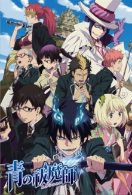
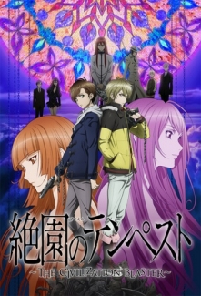

Fairy Tail

Genç bir büyücü olan Lucy’nin hayali, Fairy Tail loncasına katılmaktır. Seyahati sırasında Natsu adında genç bir adamla karşılaşır. Natsu’ya hayallerini anlatır ve yoluna devam eder. Ancak bir süre sonra Lucy, birtakım adamlar tarafından köle olarak satılması için yakalanır. Fakat Natsu ortaya çıkar ve Lucy’i kurtarır. Natsu çok güçlü bir ateş büyücüsü ve Fairy Tail loncasının bir üyesidir. Natsu, Lucy’e Fairy Tail’e katılmasını teklif eder. Böylece Natsu ve Lucy bir takım olurlar ve loncanın verdiği görevlere beraber katılırlar.
Sword Art Online

2022 yılında piyasaya sürülen Sword Art Online MMORPG oyunu, başa takılan bir alet aracılığıyla oyuncuları kendi dünyasına götürerek gerçek bir Role-Playing oyunu sunmaktadır. Oyuna katılan 10.000 oyuncu arasında olan Kirito da SAO dünyasına giriş yapmıştır. Fakat kısa sürede bütün oyuncular oyundan çıkış olmadığını fark ederler ve herkes bir anda geniş bir alana ışınlanır. Oyunun yapımcısının burada yaptığı açıklamaya göre oyundan çıkmanın tek yolu 100 katlı SAO dünyasını temizlemektir. Her katta bir boss bulunmaktadır ve 100. kattaki boss'u öldürebilen oyundan çıkabilecektir. Fakat oyunda sağlığı biten kişi gerçek hayatta da ölecek, ayrıca dışarıdan biri oyuncuların başındaki aleti çıkarmak isterse alet oyuncuları öldürecektir. Bütün oyuncular şaşkınlık içerisindeyken oyunlar konusunda tecrübeli olan Kirito oyunu kazanmayı kafasına koymuştur.
Ao no Exorcist
Dünya, ayna gibi birbirine zıt iki farklı boyuttan oluşmaktaydı: İnsanların yaşadığı Assiah ve iblislerin hüküm sürdüğü Gehenna. Bu iki boyut arasında iletişim ve seyahat mümkün olmamasına rağmen iblisler, insanların ruhlarını ele geçirerek Assiah'a ulaşabiliyorlardı. İblislerin tanrısı Şeytan, kendisini barındırabilecek kadar güçlü bir insan bulamadığı için Gehenna'da sıkışıp kalmıştı. Bunu aşmak için, bir insan kadınından Okumura Rin adında bir çocuk sahibi oldu. Şeytan'ın oğlu, babasına yardım edecek mi, yoksa başka bir şeye mi dönüşecek? Bir ruh kovucuya mı?
Overlord

Hikayemiz popüler bir online oyun olan Yggdrasil’in bir gün kapatılması ile başlıyor, ama baş kahramanımız olan Momonga oyundan çıkış yapmamaya karar veriyor. Daha sonra Momonga ‘’ En Güçlü Büyücü’’ olan iskelet bir varlığa dönüşüyor. Dünya değişmeye devam eder ve oyun yapımı karakterler olan NPC’ler duygular hissetmeye başlar. Hiç bir ailesi, arkadaşı ya da toplumda bir yeri olmayan bu sıradan genç adam Momonga, bu yeni oyun dünyasını ele geçirmek için çabalamaya başlar.
Tate no Yuusha no Nariagari

Iwatani Naofumi, kahraman olmak için 3 kişi ile birlikte paralel bir dünyaya çağrılır ve bu çağrılan kahramanlar efsanevi ekipmanlarla donatıldılar. Kalkan Kahramanı olan Naofumi, ise deneyimsizliği ve yetersizliğinden dolayı en zayıf kahraman olarak görülür ve ihanete uğrar. Kendine ihanet edenlerden intikamını almaya ant içer. Böylece paralel dünyadaki kaderi başlar...
Zetsuen no Tempest
Mahiro Fuwa'nın ailesi 1 yıl önce esrarengiz bir şekilde öldürülmüş ve Mahiro ailesinin katilini aramak üzere ortadan kaybolmuştur. "Kusaribe" adlı büyücü klanının en güçlü büyücülerinden biri olan Hakase Kusaribe ise düşmanları tarafından bir adaya hapsedilmiştir. Hakase, irtibat kurabileceği birini ararken bir şekilde Mahiro'yu bulur ve ikisi bir anlaşma yapar. Anlaşmaya göre Mahiro, Hakase'nin düşmanları tarafından uyandırılmak istenen ve tüm dünyaya kaos getirecek "Zetsuen Ağacı'nı" durduracaktır. Bunun karşılığında Hakase, Mahiro'nun ailesini öldüren katili bulmasına yardım edecektir.